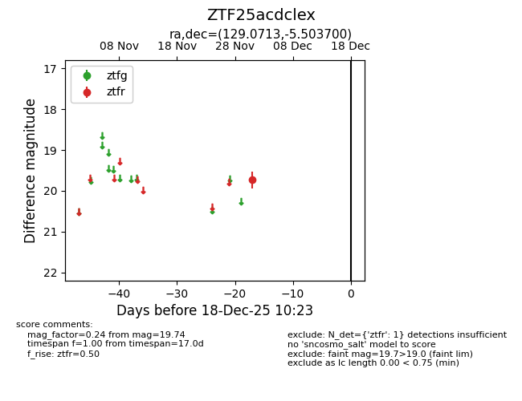
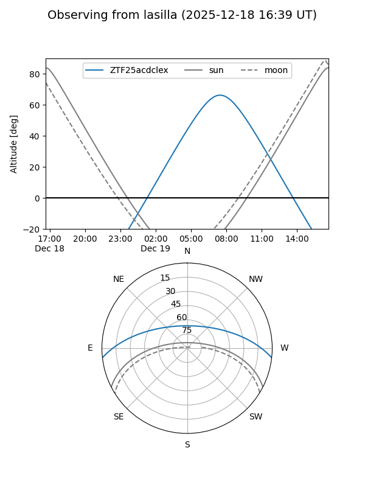
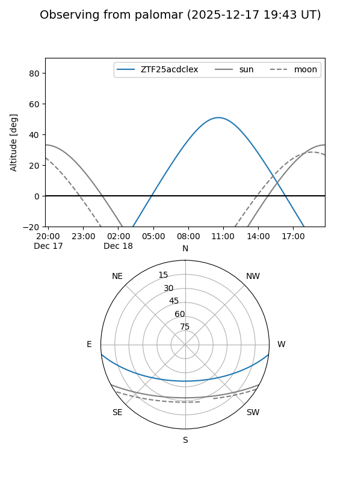

ZTF25acdclex
Target ZTF25acdclex at 2025-12-18 11:17
Aliases and brokers:
FINK: fink-portal.org/ZTF25acdclex
Lasair: lasair-ztf.lsst.ac.uk/objects/ZTF25acdclex
ALeRCE: alerce.online/object/ZTF25acdclex
alt names
ZTF25acdclex (ztf,fink_ztf)
Coordinates:
equatorial (ra, dec) = 129.0713,-5.50370
equatorial (HMS+DMS) = 08:36:17.11,-05:30:13.32
galactic (l, b) = (230.6803,+20.33779)
Photometry
last ztfr=19.74
1 ztfr detections
Lightcurve

Visibility


Additional plots